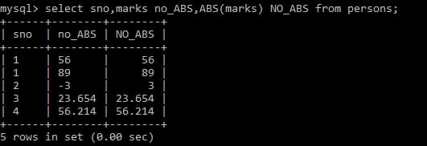
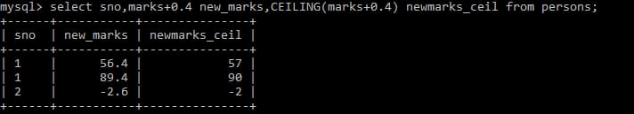
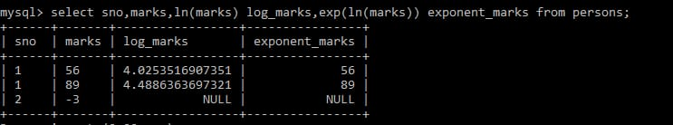
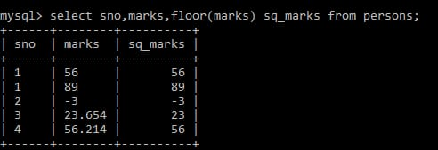
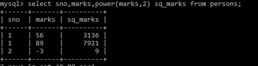
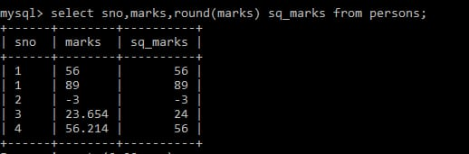
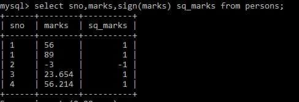
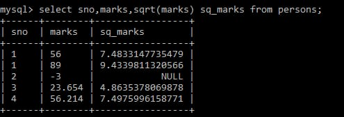

A mathematical function that returns the absolute(positive) value of the specified numeric expression
Returns the smallest integer greater than or equal to the specific numeric expression
Returns the value of the e(the base of natural logarithms) raised to the power of x
Returns the largest integer less than or equal to the specified numeric expression
Returns the value of the specified expression to the specified power
Returns a numeric value ,rounded to the specified length or precision
Returns the positive(+1),zero(0),or negative(-1) sign of a numeric expression
Returns the square root of a non negative numeric function
